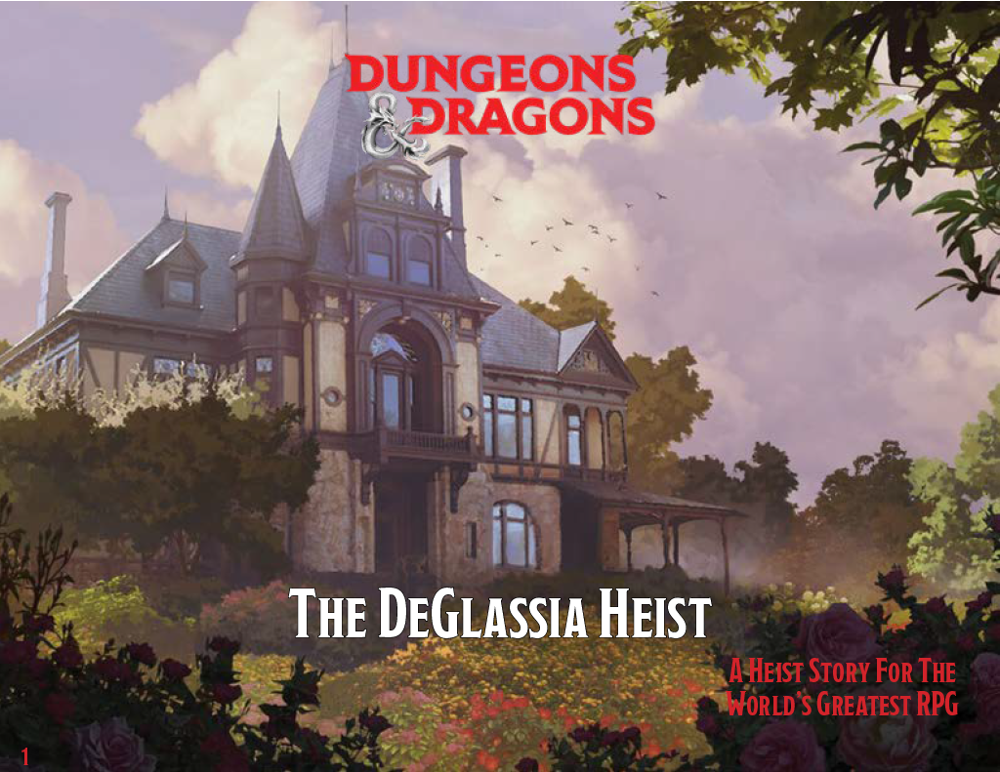

The DeGlassia Heist - A Dungeons & Dragons 5th Edition Module
A D&D module I published, The DeGlassia Heist is an adventure for 3rd level characters. This adventure departs from the usual dungeon crawling one might expect in a game of Dungeons & Dragons, both in terms of it's content and layout. I tried to depart from the usual styling that the Dungeon Master's Guide would require, creating a landscape-oriented document. I feel if a Dungeon Master intending to run this adventure and were to print this out, the landscape format may be a better fit for placing behind the DM Screen.

A seemingly normal painting comes up for auction, but there are those that wish to see it in their possession without paying the cost. But what lengts will those with unscupulous ideals go to collect it? And is this just a painting, or does it hide a terrible secret?
To see the entire Branding & Style Guide, take a peek at the Behance link below!